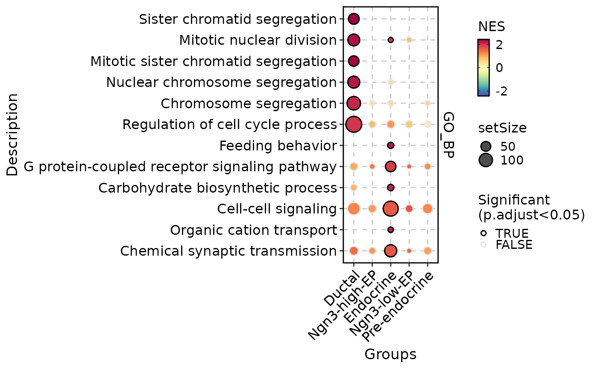
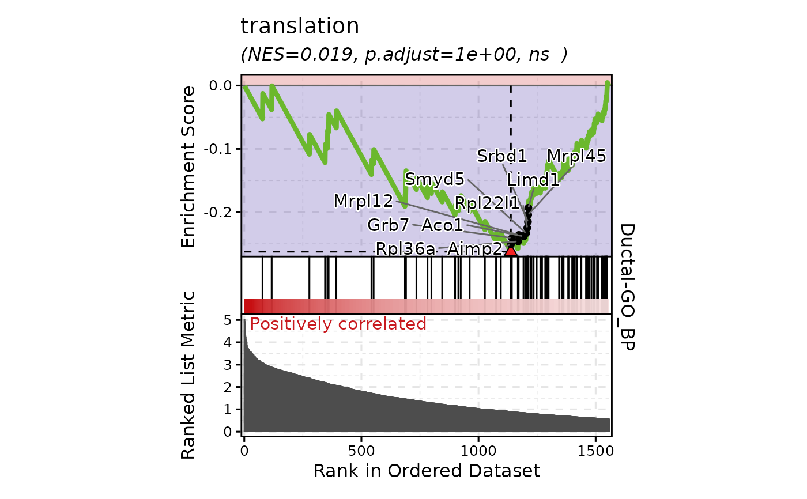
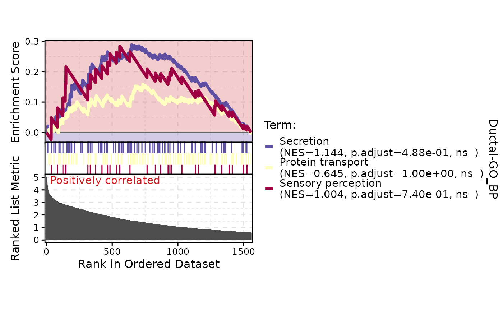
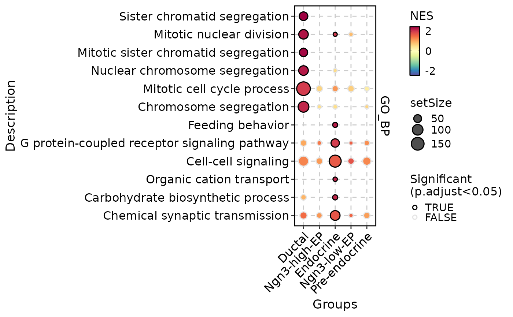

Perform the enrichment analysis (GSEA) on the genes
Usage
RunGSEA(
srt = NULL,
group_by = NULL,
test.use = "wilcox",
DE_threshold = "p_val_adj < 0.05",
scoreType = "std",
geneID = NULL,
geneScore = NULL,
geneID_groups = NULL,
geneID_exclude = NULL,
IDtype = "symbol",
result_IDtype = "symbol",
species = "Homo_sapiens",
db = "GO_BP",
db_update = FALSE,
db_version = "latest",
db_combine = FALSE,
convert_species = TRUE,
Ensembl_version = 103,
mirror = NULL,
TERM2GENE = NULL,
TERM2NAME = NULL,
minGSSize = 10,
maxGSSize = 500,
unlimited_db = c("Chromosome", "GeneType", "TF", "Enzyme", "CSPA"),
GO_simplify = FALSE,
GO_simplify_cutoff = "p.adjust < 0.05",
simplify_method = "Wang",
simplify_similarityCutoff = 0.7,
cores = 1,
verbose = TRUE
)Arguments
- srt
A Seurat object containing the results of differential expression analysis (RunDEtest). If specified, the genes and groups will be extracted from the Seurat object automatically. If not specified, the
geneIDandgeneID_groupsarguments must be provided.- group_by
A character vector specifying the grouping variable in the Seurat object. This argument is only used if
srtis specified.- test.use
A character vector specifying the test to be used in differential expression analysis. This argument is only used if
srtis specified.- DE_threshold
A character vector specifying the filter condition for differential expression analysis. This argument is only used if
srtis specified.- scoreType
This parameter defines the GSEA score type. Possible options are "std", "pos", "neg". By default ("std") the enrichment score is computed as in the original GSEA. The "pos" and "neg" score types are intended to be used for one-tailed tests (i.e. when one is interested only in positive ("pos") or negateive ("neg") enrichment).
- geneID
A character vector specifying the gene IDs.
- geneScore
A numeric vector that specifies the gene scores, for example, the log2(fold change) values of gene expression.
- geneID_groups
A factor vector specifying the group labels for each gene.
- geneID_exclude
A character vector specifying the gene IDs to be excluded from the analysis.
- IDtype
A character vector specifying the type of gene IDs in the
srtobject orgeneIDargument. This argument is used to convert the gene IDs to a different type ifIDtypeis different fromresult_IDtype.- result_IDtype
A character vector specifying the desired type of gene ID to be used in the output. This argument is used to convert the gene IDs from
IDtypetoresult_IDtype.- species
A character vector specifying the species for which the analysis is performed.
- db
A character vector specifying the name of the database to be used for enrichment analysis.
- db_update
A logical value indicating whether the gene annotation databases should be forcefully updated. If set to FALSE, the function will attempt to load the cached databases instead. Default is FALSE.
- db_version
A character vector specifying the version of the database to be used. This argument is ignored if
db_updateisTRUE. Default is "latest".- db_combine
A logical value indicating whether to combine multiple databases into one. If TRUE, all database specified by
dbwill be combined as one named "Combined".- convert_species
A logical value indicating whether to use a species-converted database when the annotation is missing for the specified species. The default value is TRUE.
- Ensembl_version
Ensembl database version. If NULL, use the current release version.
- mirror
Specify an Ensembl mirror to connect to. The valid options here are
"www","uswest","useast","asia".- TERM2GENE
A data frame specifying the gene-term mapping for a custom database. The first column should contain the term IDs, and the second column should contain the gene IDs.
- TERM2NAME
A data frame specifying the term-name mapping for a custom database. The first column should contain the term IDs, and the second column should contain the corresponding term names.
- minGSSize
A numeric value specifying the minimum size of a gene set to be considered in the enrichment analysis.
- maxGSSize
A numeric value specifying the maximum size of a gene set to be considered in the enrichment analysis.
- unlimited_db
A character vector specifying the names of databases that do not have size restrictions.
- GO_simplify
A logical value indicating whether to simplify the GO terms. If
TRUE, additional results with simplified GO terms will be returned.- GO_simplify_cutoff
A character vector specifying the filter condition for simplification of GO terms. This argument is only used if
GO_simplifyisTRUE.- simplify_method
A character vector specifying the method to be used for simplification of GO terms. This argument is only used if
GO_simplifyisTRUE.- simplify_similarityCutoff
A numeric value specifying the similarity cutoff for simplification of GO terms. This argument is only used if
GO_simplifyisTRUE.- cores
The number of cores to use for parallelization with foreach::foreach. Default is
1.- verbose
Whether to print the message. Default is
TRUE.
Value
If input is a Seurat object, returns the modified Seurat object with the enrichment result stored in the tools slot.
If input is a geneID vector with or without geneID_groups, return the enrichment result directly.
Enrichment result is a list with the following component:
enrichment: A data.frame containing all enrichment results.results: A list ofgseaResultobjects from the DOSE package.geneMap: A data.frame containing the ID mapping table for input gene IDs.input: A data.frame containing the input gene IDs and gene ID groups.DE_threshold: A specific threshold for differential expression analysis (only returned if input is a Seurat object).
Examples
data(pancreas_sub)
pancreas_sub <- standard_scop(pancreas_sub)
#> ℹ [2025-09-07 13:46:50] Start standard scop workflow...
#> ℹ [2025-09-07 13:46:51] Checking a list of <Seurat> objects...
#> ! [2025-09-07 13:46:51] Data 1/1 of the `srt_list` is "unknown"
#> ℹ [2025-09-07 13:46:51] Perform `NormalizeData()` with `normalization.method = 'LogNormalize'` on the data 1/1 of the `srt_list`...
#> ℹ [2025-09-07 13:46:53] Perform `Seurat::FindVariableFeatures()` on the data 1/1 of the `srt_list`...
#> ℹ [2025-09-07 13:46:54] Use the separate HVF from srt_list
#> ℹ [2025-09-07 13:46:54] Number of available HVF: 2000
#> ℹ [2025-09-07 13:46:54] Finished check
#> ℹ [2025-09-07 13:46:54] Perform `Seurat::ScaleData()` on the data...
#> Warning: Different features in new layer data than already exists for scale.data
#> ℹ [2025-09-07 13:46:55] Perform pca linear dimension reduction on the data...
#> StandardPC_ 1
#> Positive: Aplp1, Cpe, Gnas, Fam183b, Map1b, Hmgn3, Pcsk1n, Chga, Tuba1a, Bex2
#> Syt13, Isl1, 1700086L19Rik, Pax6, Chgb, Scgn, Rbp4, Scg3, Gch1, Camk2n1
#> Cryba2, Pcsk2, Pyy, Tspan7, Mafb, Hist3h2ba, Dbpht2, Abcc8, Rap1b, Slc38a5
#> Negative: Spp1, Anxa2, Sparc, Dbi, 1700011H14Rik, Wfdc2, Gsta3, Adamts1, Clu, Mgst1
#> Bicc1, Ldha, Vim, Cldn3, Cyr61, Rps2, Mt1, Ptn, Phgdh, Nudt19
#> Smtnl2, Smco4, Habp2, Mt2, Col18a1, Rpl12, Galk1, Cldn10, Acot1, Ccnd1
#> StandardPC_ 2
#> Positive: Rbp4, Tagln2, Tuba1b, Fkbp2, Pyy, Pcsk2, Iapp, Tmem27, Meis2, Tubb4b
#> Pcsk1n, Dbpht2, Rap1b, Dynll1, Tubb2a, Sdf2l1, Scgn, 1700086L19Rik, Scg2, Abcc8
#> Atp1b1, Hspa5, Fam183b, Papss2, Slc38a5, Scg3, Mageh1, Tspan7, Ppp1r1a, Ociad2
#> Negative: Neurog3, Btbd17, Gadd45a, Ppp1r14a, Neurod2, Sox4, Smarcd2, Mdk, Pax4, Btg2
#> Sult2b1, Hes6, Grasp, Igfbpl1, Gpx2, Cbfa2t3, Foxa3, Shf, Mfng, Tmsb4x
#> Amotl2, Gdpd1, Cdc14b, Epb42, Rcor2, Cotl1, Upk3bl, Rbfox3, Cldn6, Cer1
#> StandardPC_ 3
#> Positive: Nusap1, Top2a, Birc5, Aurkb, Cdca8, Pbk, Mki67, Tpx2, Plk1, Ccnb1
#> 2810417H13Rik, Incenp, Cenpf, Ccna2, Prc1, Racgap1, Cdk1, Aurka, Cdca3, Hmmr
#> Spc24, Kif23, Sgol1, Cenpe, Cdc20, Hist1h1b, Cdca2, Mxd3, Kif22, Ska1
#> Negative: Anxa5, Pdzk1ip1, Acot1, Tpm1, Anxa2, Dcdc2a, Capg, Sparc, Ttr, Pamr1
#> Clu, Cxcl12, Ndrg2, Hnf1aos1, Gas6, Gsta3, Krt18, Ces1d, Atp1b1, Muc1
#> Hhex, Acadm, Spp1, Enpp2, Bcl2l14, Sat1, Smtnl2, 1700011H14Rik, Tgm2, Fam159a
#> StandardPC_ 4
#> Positive: Glud1, Tm4sf4, Akr1c19, Cldn4, Runx1t1, Fev, Pou3f4, Gm43861, Pgrmc1, Arx
#> Cd200, Lrpprc, Hmgn3, Ppp1r14c, Pam, Etv1, Tsc22d1, Slc25a5, Akap17b, Pgf
#> Fam43a, Emb, Jun, Krt8, Dnajc12, Mid1ip1, Ids, Rgs17, Uchl1, Alcam
#> Negative: Ins2, Ins1, Ppp1r1a, Nnat, Calr, Sytl4, Sdf2l1, Iapp, Pdia6, Mapt
#> G6pc2, C2cd4b, Npy, Gng12, P2ry1, Ero1lb, Adra2a, Papss2, Arhgap36, Fam151a
#> Dlk1, Creld2, Gip, Tmem215, Gm27033, Cntfr, Prss53, C2cd4a, Lyve1, Ociad2
#> StandardPC_ 5
#> Positive: Pdx1, Nkx6-1, Npepl1, Cldn4, Cryba2, Fev, Jun, Chgb, Gng12, Adra2a
#> Mnx1, Sytl4, Pdk3, Gm27033, Nnat, Chga, Ins2, 1110012L19Rik, Enho, Krt7
#> Mlxipl, Tmsb10, Flrt1, Pax4, Tubb3, Prrg2, Gars, Frzb, BC023829, Gm2694
#> Negative: Irx2, Irx1, Gcg, Ctxn2, Tmem27, Ctsz, Tmsb15l, Nap1l5, Pou6f2, Gria2
#> Ghrl, Peg10, Smarca1, Arx, Lrpap1, Rgs4, Ttr, Gast, Tmsb15b2, Serpina1b
#> Slc16a10, Wnk3, Ly6e, Auts2, Sct, Arg1, Dusp10, Sphkap, Dock11, Edn3
#> ℹ [2025-09-07 13:46:55] Perform `Seurat::FindClusters()` with louvain and `cluster_resolution` = 0.6 on the data...
#> ℹ [2025-09-07 13:46:56] Reorder clusters...
#> ! [2025-09-07 13:46:56] Using `Seurat::AggregateExpression()` to calculate pseudo-bulk data for <Assay5>
#> ℹ [2025-09-07 13:46:56] Perform umap nonlinear dimension reduction on the data...
#> ℹ [2025-09-07 13:46:56] Non-linear dimensionality reduction (umap) using (Standardpca) dims (1-50) as input
#> ℹ [2025-09-07 13:47:00] Non-linear dimensionality reduction (umap) using (Standardpca) dims (1-50) as input
#> ✔ [2025-09-07 13:47:05] Run scop standard workflow done
pancreas_sub <- RunDEtest(
pancreas_sub,
group_by = "CellType"
)
#> ℹ [2025-09-07 13:47:05] Installing package: presto...
#>
#> ✔ All system requirements are already installed.
#>
#> ℹ No downloads are needed
#> ℹ Installing system requirements
#> ℹ Executing `sudo sh -c apt-get -y update`
#> Get:1 file:/etc/apt/apt-mirrors.txt Mirrorlist [144 B]
#> Hit:2 http://azure.archive.ubuntu.com/ubuntu noble InRelease
#> Hit:3 http://azure.archive.ubuntu.com/ubuntu noble-updates InRelease
#> Hit:6 https://packages.microsoft.com/repos/azure-cli noble InRelease
#> Hit:4 http://azure.archive.ubuntu.com/ubuntu noble-backports InRelease
#> Hit:5 http://azure.archive.ubuntu.com/ubuntu noble-security InRelease
#> Hit:7 https://packages.microsoft.com/ubuntu/24.04/prod noble InRelease
#> Reading package lists...
#> ℹ Executing `sudo sh -c apt-get -y install libicu-dev`
#> Reading package lists...
#> Building dependency tree...
#> Reading state information...
#> libicu-dev is already the newest version (74.2-1ubuntu3.1).
#> 0 upgraded, 0 newly installed, 0 to remove and 15 not upgraded.
#> ✔ 1 pkg + 23 deps: kept 23 [3.2s]
#> ℹ [2025-09-07 13:47:08] All packages installed successfully
#> ℹ [2025-09-07 13:47:08] Data type is log-normalized
#> ℹ [2025-09-07 13:47:08] Start differential expression test
#> ℹ [2025-09-07 13:47:08] Find all markers(wilcox) among 5 groups...
#> ℹ [2025-09-07 13:47:08] Using 1 core
#> ⠙ [2025-09-07 13:47:08] Running [1/5] ETA: 1s
#> ✔ [2025-09-07 13:47:08] Completed 5 tasks in 780ms
#>
#> ℹ [2025-09-07 13:47:09] Building results
#> ✔ [2025-09-07 13:47:09] Differential expression test completed
pancreas_sub <- RunGSEA(
pancreas_sub,
group_by = "CellType",
DE_threshold = "p_val_adj < 0.05",
scoreType = "std",
db = "GO_BP",
species = "Mus_musculus"
)
#> ℹ [2025-09-07 13:47:09] Start GSEA analysis
#> ! [2025-09-07 13:47:09] All values in the `geneScore` are greater than zero. Set scoreType = 'pos'
#> ℹ [2025-09-07 13:47:09] Species: Mus_musculus
#> ℹ [2025-09-07 13:47:09] Loading cached: GO_BP version: 3.21.0 nterm:15445 created: "2025-09-07 13:13:33"
#> ℹ [2025-09-07 13:47:10] Using 1 core
#> ⠙ [2025-09-07 13:47:10] Running [1/5] ETA: 2m
#> ⠹ [2025-09-07 13:47:10] Running [2/5] ETA: 1m
#> ⠸ [2025-09-07 13:47:10] Running [3/5] ETA: 1m
#> ⠼ [2025-09-07 13:47:10] Running [4/5] ETA: 27s
#> ✔ [2025-09-07 13:47:10] Completed 5 tasks in 2m 7.6s
#>
#> ℹ [2025-09-07 13:49:18] Building results
#> ✔ [2025-09-07 13:49:18] GSEA analysis done
GSEAPlot(
pancreas_sub,
db = "GO_BP",
group_by = "CellType",
plot_type = "comparison"
)
#> Warning: Vectorized input to `element_text()` is not officially supported.
#> ℹ Results may be unexpected or may change in future versions of ggplot2.
#> Warning: No shared levels found between `names(values)` of the manual scale and the
#> data's alpha values.

GSEAPlot(
pancreas_sub,
db = "GO_BP",
group_by = "CellType",
group_use = "Ductal",
id_use = "GO:0006412"
)

GSEAPlot(
pancreas_sub,
db = "GO_BP",
group_by = "CellType",
group_use = "Ductal",
id_use = c(
"GO:0046903", "GO:0015031", "GO:0007600"
)
)

# Remove redundant GO terms
pancreas_sub <- RunGSEA(
pancreas_sub,
group_by = "CellType",
db = "GO_BP",
GO_simplify = TRUE,
species = "Mus_musculus"
)
#> ℹ [2025-09-07 13:49:20] Start GSEA analysis
#> ! [2025-09-07 13:49:20] All values in the `geneScore` are greater than zero. Set scoreType = 'pos'
#> ℹ [2025-09-07 13:49:20] Species: Mus_musculus
#> ℹ [2025-09-07 13:49:20] Loading cached: GO_BP version: 3.21.0 nterm:15445 created: "2025-09-07 13:13:33"
#> ℹ [2025-09-07 13:49:21] Using 1 core
#> ⠙ [2025-09-07 13:49:21] Running [1/5] ETA: 3m
#> ! [2025-09-07 13:50:30] GO_BP | "Ngn3-high-EP" has no term to simplify
#> ⠙ [2025-09-07 13:49:21] Running [1/5] ETA: 3m
#> ⠹ [2025-09-07 13:49:21] Running [2/5] ETA: 2m
#> ⠸ [2025-09-07 13:49:21] Running [3/5] ETA: 1m
#> ! [2025-09-07 13:51:22] GO_BP | "Ngn3-low-EP" has no term to simplify
#> ⠸ [2025-09-07 13:49:21] Running [3/5] ETA: 1m
#> ⠼ [2025-09-07 13:49:21] Running [4/5] ETA: 30s
#> ! [2025-09-07 13:51:41] GO_BP | "Pre-endocrine" has no term to simplify
#> ⠼ [2025-09-07 13:49:21] Running [4/5] ETA: 30s
#> ✔ [2025-09-07 13:49:21] Completed 5 tasks in 2m 20.5s
#>
#> ℹ [2025-09-07 13:51:41] Building results
#> ✔ [2025-09-07 13:51:41] GSEA analysis done
GSEAPlot(
pancreas_sub,
db = "GO_BP_sim",
group_by = "CellType",
plot_type = "comparison"
)
#> Error in GSEAPlot(pancreas_sub, db = "GO_BP_sim", group_by = "CellType", plot_type = "comparison"): GO_BP_sim is not in the enrichment result.
# Or use "geneID", "geneScore" and
# "geneID_groups" as input to run GSEA
de_df <- dplyr::filter(
pancreas_sub@tools$DEtest_CellType$AllMarkers_wilcox,
p_val_adj < 0.05
)
gsea_out <- RunGSEA(
geneID = de_df[["gene"]],
geneScore = de_df[["avg_log2FC"]],
geneID_groups = de_df[["group1"]],
db = "GO_BP",
species = "Mus_musculus"
)
#> ℹ [2025-09-07 13:51:41] Start GSEA analysis
#> ! [2025-09-07 13:51:41] All values in the `geneScore` are greater than zero. Set scoreType = 'pos'
#> ℹ [2025-09-07 13:51:41] Species: Mus_musculus
#> ℹ [2025-09-07 13:51:41] Loading cached: GO_BP version: 3.21.0 nterm:15445 created: "2025-09-07 13:13:33"
#> ℹ [2025-09-07 13:51:43] Using 1 core
#> ⠙ [2025-09-07 13:51:43] Running [1/5] ETA: 2m
#> ⠹ [2025-09-07 13:51:43] Running [2/5] ETA: 2m
#> ⠸ [2025-09-07 13:51:43] Running [3/5] ETA: 1m
#> ⠼ [2025-09-07 13:51:43] Running [4/5] ETA: 27s
#> ✔ [2025-09-07 13:51:43] Completed 5 tasks in 2m 8.7s
#>
#> ℹ [2025-09-07 13:53:51] Building results
#> ✔ [2025-09-07 13:53:51] GSEA analysis done
GSEAPlot(
res = gsea_out,
db = "GO_BP",
plot_type = "comparison"
)
#> Warning: Vectorized input to `element_text()` is not officially supported.
#> ℹ Results may be unexpected or may change in future versions of ggplot2.
#> Warning: No shared levels found between `names(values)` of the manual scale and the
#> data's alpha values.

# Use a combined database
pancreas_sub <- RunGSEA(
pancreas_sub,
group_by = "CellType",
db = c(
"KEGG", "WikiPathway", "Reactome", "PFAM", "MP"
),
db_combine = TRUE,
species = "Mus_musculus"
)
#> ℹ [2025-09-07 13:53:52] Start GSEA analysis
#> ! [2025-09-07 13:53:52] All values in the `geneScore` are greater than zero. Set scoreType = 'pos'
#> ℹ [2025-09-07 13:53:52] Species: Mus_musculus
#> ℹ [2025-09-07 13:53:52] Installing package: org.Mm.eg.db...
#>
#> ✔ All system requirements are already installed.
#>
#> ℹ No downloads are needed
#> ℹ Installing system requirements
#> ℹ Executing `sudo sh -c apt-get -y update`
#> Get:1 file:/etc/apt/apt-mirrors.txt Mirrorlist [144 B]
#> Hit:2 http://azure.archive.ubuntu.com/ubuntu noble InRelease
#> Hit:3 http://azure.archive.ubuntu.com/ubuntu noble-updates InRelease
#> Hit:4 http://azure.archive.ubuntu.com/ubuntu noble-backports InRelease
#> Hit:5 http://azure.archive.ubuntu.com/ubuntu noble-security InRelease
#> Hit:6 https://packages.microsoft.com/repos/azure-cli noble InRelease
#> Hit:7 https://packages.microsoft.com/ubuntu/24.04/prod noble InRelease
#> Reading package lists...
#> ℹ Executing `sudo sh -c apt-get -y install libcurl4-openssl-dev libssl-dev libpng-dev`
#> Reading package lists...
#> Building dependency tree...
#> Reading state information...
#> libcurl4-openssl-dev is already the newest version (8.5.0-2ubuntu10.6).
#> libssl-dev is already the newest version (3.0.13-0ubuntu3.5).
#> libpng-dev is already the newest version (1.6.43-5build1).
#> 0 upgraded, 0 newly installed, 0 to remove and 15 not upgraded.
#> ✔ 1 pkg + 36 deps: kept 37 [3.1s]
#> ℹ [2025-09-07 13:53:55] Installing package: GO.db...
#>
#> ✔ All system requirements are already installed.
#>
#> ℹ No downloads are needed
#> ℹ Installing system requirements
#> ℹ Executing `sudo sh -c apt-get -y update`
#> Get:1 file:/etc/apt/apt-mirrors.txt Mirrorlist [144 B]
#> Hit:2 http://azure.archive.ubuntu.com/ubuntu noble InRelease
#> Hit:3 http://azure.archive.ubuntu.com/ubuntu noble-updates InRelease
#> Hit:4 http://azure.archive.ubuntu.com/ubuntu noble-backports InRelease
#> Hit:5 http://azure.archive.ubuntu.com/ubuntu noble-security InRelease
#> Hit:6 https://packages.microsoft.com/repos/azure-cli noble InRelease
#> Hit:7 https://packages.microsoft.com/ubuntu/24.04/prod noble InRelease
#> Reading package lists...
#> ℹ Executing `sudo sh -c apt-get -y install libcurl4-openssl-dev libssl-dev libpng-dev`
#> Reading package lists...
#> Building dependency tree...
#> Reading state information...
#> libcurl4-openssl-dev is already the newest version (8.5.0-2ubuntu10.6).
#> libssl-dev is already the newest version (3.0.13-0ubuntu3.5).
#> libpng-dev is already the newest version (1.6.43-5build1).
#> 0 upgraded, 0 newly installed, 0 to remove and 15 not upgraded.
#> ✔ 1 pkg + 36 deps: kept 37 [2.8s]
#> ℹ [2025-09-07 13:53:58] Installing package: GOSemSim...
#>
#> ✔ All system requirements are already installed.
#>
#> ℹ No downloads are needed
#> ℹ Installing system requirements
#> ℹ Executing `sudo sh -c apt-get -y update`
#> Get:1 file:/etc/apt/apt-mirrors.txt Mirrorlist [144 B]
#> Hit:2 http://azure.archive.ubuntu.com/ubuntu noble InRelease
#> Hit:3 http://azure.archive.ubuntu.com/ubuntu noble-updates InRelease
#> Hit:4 http://azure.archive.ubuntu.com/ubuntu noble-backports InRelease
#> Hit:6 https://packages.microsoft.com/repos/azure-cli noble InRelease
#> Hit:5 http://azure.archive.ubuntu.com/ubuntu noble-security InRelease
#> Hit:7 https://packages.microsoft.com/ubuntu/24.04/prod noble InRelease
#> Reading package lists...
#> ℹ Executing `sudo sh -c apt-get -y install libcurl4-openssl-dev libssl-dev make libpng-dev`
#> Reading package lists...
#> Building dependency tree...
#> Reading state information...
#> libcurl4-openssl-dev is already the newest version (8.5.0-2ubuntu10.6).
#> libssl-dev is already the newest version (3.0.13-0ubuntu3.5).
#> make is already the newest version (4.3-4.1build2).
#> libpng-dev is already the newest version (1.6.43-5build1).
#> 0 upgraded, 0 newly installed, 0 to remove and 15 not upgraded.
#> ✔ 1 pkg + 44 deps: kept 45 [3s]
#> ℹ [2025-09-07 13:54:01] All packages installed successfully
#> ℹ [2025-09-07 13:54:01] Installing package: PFAM.db...
#>
#> → Will install 1 package.
#> → The package (0 B) is cached.
#> + PFAM.db 3.21.0 [bld]
#> ✔ All system requirements are already installed.
#>
#> ℹ No downloads are needed, 1 pkg is cached
#> ℹ Installing system requirements
#> ℹ Executing `sudo sh -c apt-get -y update`
#> Get:1 file:/etc/apt/apt-mirrors.txt Mirrorlist [144 B]
#> Hit:2 http://azure.archive.ubuntu.com/ubuntu noble InRelease
#> Hit:6 https://packages.microsoft.com/repos/azure-cli noble InRelease
#> Hit:7 https://packages.microsoft.com/ubuntu/24.04/prod noble InRelease
#> Hit:3 http://azure.archive.ubuntu.com/ubuntu noble-updates InRelease
#> Hit:4 http://azure.archive.ubuntu.com/ubuntu noble-backports InRelease
#> Hit:5 http://azure.archive.ubuntu.com/ubuntu noble-security InRelease
#> Reading package lists...
#> ℹ Executing `sudo sh -c apt-get -y install libcurl4-openssl-dev libssl-dev libpng-dev`
#> Reading package lists...
#> Building dependency tree...
#> Reading state information...
#> libcurl4-openssl-dev is already the newest version (8.5.0-2ubuntu10.6).
#> libssl-dev is already the newest version (3.0.13-0ubuntu3.5).
#> libpng-dev is already the newest version (1.6.43-5build1).
#> 0 upgraded, 0 newly installed, 0 to remove and 15 not upgraded.
#> ℹ Building PFAM.db 3.21.0
#> ✔ Built PFAM.db 3.21.0 (15.1s)
#> ✔ Installed PFAM.db 3.21.0 (1.2s)
#> ✔ 1 pkg + 36 deps: kept 36, added 1 [19.4s]
#> ℹ [2025-09-07 13:54:20] All packages installed successfully
#> ℹ [2025-09-07 13:54:20] Installing package: reactome.db...
#>
#> → Will install 1 package.
#> → The package (0 B) is cached.
#> + reactome.db 1.92.0 [bld]
#> ✔ All system requirements are already installed.
#>
#> ℹ No downloads are needed, 1 pkg is cached
#> ℹ Installing system requirements
#> ℹ Executing `sudo sh -c apt-get -y update`
#> Get:1 file:/etc/apt/apt-mirrors.txt Mirrorlist [144 B]
#> Hit:2 http://azure.archive.ubuntu.com/ubuntu noble InRelease
#> Hit:6 https://packages.microsoft.com/repos/azure-cli noble InRelease
#> Hit:3 http://azure.archive.ubuntu.com/ubuntu noble-updates InRelease
#> Hit:4 http://azure.archive.ubuntu.com/ubuntu noble-backports InRelease
#> Hit:5 http://azure.archive.ubuntu.com/ubuntu noble-security InRelease
#> Hit:7 https://packages.microsoft.com/ubuntu/24.04/prod noble InRelease
#> Reading package lists...
#> ℹ Executing `sudo sh -c apt-get -y install libcurl4-openssl-dev libssl-dev libpng-dev`
#> Reading package lists...
#> Building dependency tree...
#> Reading state information...
#> libcurl4-openssl-dev is already the newest version (8.5.0-2ubuntu10.6).
#> libssl-dev is already the newest version (3.0.13-0ubuntu3.5).
#> libpng-dev is already the newest version (1.6.43-5build1).
#> 0 upgraded, 0 newly installed, 0 to remove and 15 not upgraded.
#> ℹ Building reactome.db 1.92.0
#> ✖ Failed to build reactome.db 1.92.0 (36.8s)
#> ! [2025-09-07 13:55:35] Failed to install package: reactome.db. Error: "error in pak subprocess"
#> ! [2025-09-07 13:55:35] Failed to install: reactome.db. Please install manually
#> ℹ [2025-09-07 13:55:35] Preparing database: KEGG
#> ℹ [2025-09-07 13:55:35] Installing package: httr...
#>
#> ✔ All system requirements are already installed.
#>
#> ℹ No downloads are needed
#> ℹ Installing system requirements
#> ℹ Executing `sudo sh -c apt-get -y update`
#> Get:1 file:/etc/apt/apt-mirrors.txt Mirrorlist [144 B]
#> Hit:2 http://azure.archive.ubuntu.com/ubuntu noble InRelease
#> Hit:6 https://packages.microsoft.com/repos/azure-cli noble InRelease
#> Hit:3 http://azure.archive.ubuntu.com/ubuntu noble-updates InRelease
#> Hit:4 http://azure.archive.ubuntu.com/ubuntu noble-backports InRelease
#> Hit:7 https://packages.microsoft.com/ubuntu/24.04/prod noble InRelease
#> Hit:5 http://azure.archive.ubuntu.com/ubuntu noble-security InRelease
#> Reading package lists...
#> ℹ Executing `sudo sh -c apt-get -y install libcurl4-openssl-dev libssl-dev`
#> Reading package lists...
#> Building dependency tree...
#> Reading state information...
#> libcurl4-openssl-dev is already the newest version (8.5.0-2ubuntu10.6).
#> libssl-dev is already the newest version (3.0.13-0ubuntu3.5).
#> 0 upgraded, 0 newly installed, 0 to remove and 15 not upgraded.
#> ✔ 1 pkg + 7 deps: kept 8 [2.3s]
#> ℹ [2025-09-07 13:55:38] All packages installed successfully
#> ℹ [2025-09-07 13:55:50] Preparing database: WikiPathway
#> ℹ [2025-09-07 13:55:54] Preparing database: Reactome
#> Error in (function (cond) .Internal(C_tryCatchHelper(addr, 1L, cond)))(structure(list(message = "there is no package called ‘reactome.db’", call = loadNamespace(x), package = "reactome.db", lib.loc = NULL), class = c("packageNotFoundError", "error", "condition"))): error in evaluating the argument 'x' in selecting a method for function 'select': there is no package called ‘reactome.db’
GSEAPlot(
pancreas_sub,
db = "Combined",
group_by = "CellType",
plot_type = "comparison"
)
#> Error in GSEAPlot(pancreas_sub, db = "Combined", group_by = "CellType", plot_type = "comparison"): Combined is not in the enrichment result.